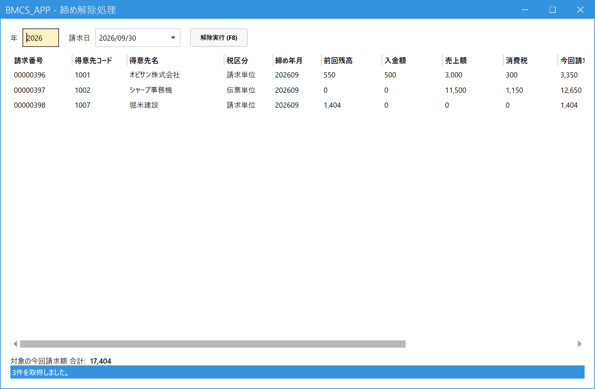

請求の締めを解除する（管理者）
管理者専用の画面です。権限レベル9の社員にだけメニューに表示されます。一般の社員のメニューには出ません。
1.解除する請求日を選ぶ
メインメニューの「請求」の中の「締め解除処理」を開きます。年を4桁で入れ、請求日を選ぶと、その日に確定した請求データの一覧が出ます。

- 年：4桁で入力。
- 請求日：その年に請求を締めた日付から選びます。
- 解除の対象になる請求データ。その請求日に確定したすべてが対象です（得意先を選んで一部だけ解除はできません）。
- 解除実行 (F8)：確認メッセージで「はい」を選ぶと解除します。
一覧の右端の「備考」に理由が出ている行があるときは、解除実行ボタンが押せません。
2.解除できない場合
- 得意先ごとに、いちばん新しい締めだけ解除できます。たとえば、9月分の後に10月分も締めてあるときは、先に10月分を解除してから9月分を解除します（新しい月から順に）。
- 対象のうち1件でも解除できないものがあると、全部が解除されません（一部だけ解除されることはありません）。
3.解除したあとの流れ
- 解除実行 (F8) で解除する（対象の売上が「未請求」に戻ります）。
- 売上入力で、直したい売上を訂正・取消する。
- 必要なら入金の登録・訂正も行う。
- 請求締め処理で、もう一度締める（新しい請求番号が付きます）。
請求書は、解除すると一覧に出なくなります。すでに印刷・送付した請求書があれば、締め直したものと差し替えてください。